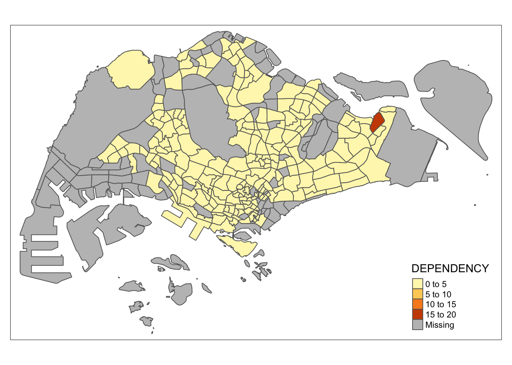
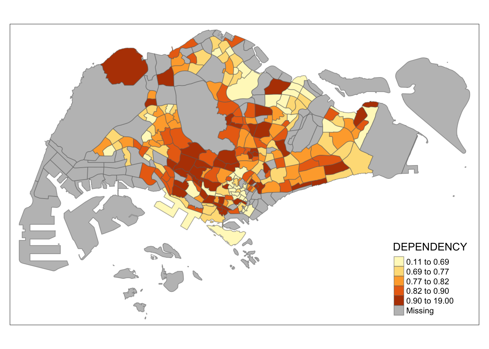

pacman::p_load(tidyverse, sf, tmap, psych)Geospatial Analysis
1. Learning Objective
A choropleth map is a thematic map composed of coloured polygons and is used to represent statistical data using the color mapping symbology technique.
Choropleth mapping involves the symbolisation of enumeration units, such as countries, provinces, states, counties or census units, using area patterns or graduated colors. For example, a social scientist may need to use a choropleth map to portray the spatial distribution of aged population of Singapore by Master Plan 2014 Subzone Boundary.
- Plot choropleth maps using tmap package
2. Import Packages
3. Load Data
mpsz is the Master Plan 2014 Subzone Boundary in ESRI shapefile format. It can be downloaded at data.gov.sg This is a geospatial data. It consists of the geographical boundary of Singapore at the planning subzone level. The data is based on URA Master Plan 2014. st_read() function of sf package to import the MP14_SUBZONE_WEB_PL shapefile into R as a simple feature data frame.
mpsz <- st_read(dsn = "data/geospatial",
layer = "MP14_SUBZONE_WEB_PL")Reading layer `MP14_SUBZONE_WEB_PL' from data source
`/Users/chockwankee/Documents/chockwk/ISSS608_Visual Analytics/Topics/HO10/data/geospatial'
using driver `ESRI Shapefile'
Simple feature collection with 323 features and 15 fields
Geometry type: MULTIPOLYGON
Dimension: XY
Bounding box: xmin: 2667.538 ymin: 15748.72 xmax: 56396.44 ymax: 50256.33
Projected CRS: SVY21mpszSimple feature collection with 323 features and 15 fields
Geometry type: MULTIPOLYGON
Dimension: XY
Bounding box: xmin: 2667.538 ymin: 15748.72 xmax: 56396.44 ymax: 50256.33
Projected CRS: SVY21
First 10 features:
OBJECTID SUBZONE_NO SUBZONE_N SUBZONE_C CA_IND PLN_AREA_N
1 1 1 MARINA SOUTH MSSZ01 Y MARINA SOUTH
2 2 1 PEARL'S HILL OTSZ01 Y OUTRAM
3 3 3 BOAT QUAY SRSZ03 Y SINGAPORE RIVER
4 4 8 HENDERSON HILL BMSZ08 N BUKIT MERAH
5 5 3 REDHILL BMSZ03 N BUKIT MERAH
6 6 7 ALEXANDRA HILL BMSZ07 N BUKIT MERAH
7 7 9 BUKIT HO SWEE BMSZ09 N BUKIT MERAH
8 8 2 CLARKE QUAY SRSZ02 Y SINGAPORE RIVER
9 9 13 PASIR PANJANG 1 QTSZ13 N QUEENSTOWN
10 10 7 QUEENSWAY QTSZ07 N QUEENSTOWN
PLN_AREA_C REGION_N REGION_C INC_CRC FMEL_UPD_D X_ADDR
1 MS CENTRAL REGION CR 5ED7EB253F99252E 2014-12-05 31595.84
2 OT CENTRAL REGION CR 8C7149B9EB32EEFC 2014-12-05 28679.06
3 SR CENTRAL REGION CR C35FEFF02B13E0E5 2014-12-05 29654.96
4 BM CENTRAL REGION CR 3775D82C5DDBEFBD 2014-12-05 26782.83
5 BM CENTRAL REGION CR 85D9ABEF0A40678F 2014-12-05 26201.96
6 BM CENTRAL REGION CR 9D286521EF5E3B59 2014-12-05 25358.82
7 BM CENTRAL REGION CR 7839A8577144EFE2 2014-12-05 27680.06
8 SR CENTRAL REGION CR 48661DC0FBA09F7A 2014-12-05 29253.21
9 QT CENTRAL REGION CR 1F721290C421BFAB 2014-12-05 22077.34
10 QT CENTRAL REGION CR 3580D2AFFBEE914C 2014-12-05 24168.31
Y_ADDR SHAPE_Leng SHAPE_Area geometry
1 29220.19 5267.381 1630379.3 MULTIPOLYGON (((31495.56 30...
2 29782.05 3506.107 559816.2 MULTIPOLYGON (((29092.28 30...
3 29974.66 1740.926 160807.5 MULTIPOLYGON (((29932.33 29...
4 29933.77 3313.625 595428.9 MULTIPOLYGON (((27131.28 30...
5 30005.70 2825.594 387429.4 MULTIPOLYGON (((26451.03 30...
6 29991.38 4428.913 1030378.8 MULTIPOLYGON (((25899.7 297...
7 30230.86 3275.312 551732.0 MULTIPOLYGON (((27746.95 30...
8 30222.86 2208.619 290184.7 MULTIPOLYGON (((29351.26 29...
9 29893.78 6571.323 1084792.3 MULTIPOLYGON (((20996.49 30...
10 30104.18 3454.239 631644.3 MULTIPOLYGON (((24472.11 29...pop is the Singapore Residents by Planning Area/Subzone, Age Group, Sex and Type of Dwelling, June 2011-2020 in csv format (i.e. respopagesextod2011to2020.csv). This is an aspatial data fie. It can be downloaded at Department of Statistics, Singapore Although it does not contain any coordinates values, but it’s PA and SZ fields can be used as unique identifiers to geocode to MP14_SUBZONE_WEB_PL shapefile.
pop <- read_csv("data/aspatial/respopagesextod2011to2020.csv")
glimpse(pop)Rows: 984,656
Columns: 7
$ PA <chr> "Ang Mo Kio", "Ang Mo Kio", "Ang Mo Kio", "Ang Mo Kio", "Ang Mo K…
$ SZ <chr> "Ang Mo Kio Town Centre", "Ang Mo Kio Town Centre", "Ang Mo Kio T…
$ AG <chr> "0_to_4", "0_to_4", "0_to_4", "0_to_4", "0_to_4", "0_to_4", "0_to…
$ Sex <chr> "Males", "Males", "Males", "Males", "Males", "Males", "Males", "M…
$ TOD <chr> "HDB 1- and 2-Room Flats", "HDB 3-Room Flats", "HDB 4-Room Flats"…
$ Pop <dbl> 0, 10, 30, 50, 0, 0, 40, 0, 0, 10, 30, 60, 0, 0, 40, 0, 0, 10, 30…
$ Time <dbl> 2011, 2011, 2011, 2011, 2011, 2011, 2011, 2011, 2011, 2011, 2011,…4. Prepare Data
The following attributes will be derived:
YOUNG: Age group 0_to_4 and 20_to_24 ECONOMY ACTIVE: Age group 25_to_29 and 60_to_64 AGED: Age group 65_and_above TOTAL: All age group DEPENDENCY: Ratio between YOUNG and AGED : ECONOMIC ACTIVE
pop2020 <- pop %>%
filter(Time == 2020) %>%
group_by(PA, SZ, AG) %>%
summarise(POP = sum(Pop)) %>%
ungroup() %>%
pivot_wider(names_from = AG, values_from = POP) %>%
mutate(YOUNG = rowSums(.[3:6]) + rowSums(.[12])) %>%
mutate(ECONOMY_ACTIVE = rowSums(.[7:11]) + rowSums(.[13:15]))%>%
mutate(AGED = rowSums(.[16:21])) %>%
mutate(TOTAL = rowSums(.[3:21])) %>%
mutate(DEPENDENCY = (YOUNG + AGED)/ECONOMY_ACTIVE) %>%
select(PA, SZ, YOUNG, ECONOMY_ACTIVE, AGED, TOTAL, DEPENDENCY)
glimpse(pop2020)Rows: 332
Columns: 7
$ PA <chr> "Ang Mo Kio", "Ang Mo Kio", "Ang Mo Kio", "Ang Mo Kio",…
$ SZ <chr> "Ang Mo Kio Town Centre", "Cheng San", "Chong Boon", "K…
$ YOUNG <dbl> 1440, 6640, 6150, 5540, 2100, 3960, 2220, 4690, 0, 1220…
$ ECONOMY_ACTIVE <dbl> 2610, 15460, 13950, 12090, 3410, 8420, 4200, 11450, 0, …
$ AGED <dbl> 760, 6050, 6470, 5120, 1310, 3610, 1530, 5100, 0, 750, …
$ TOTAL <dbl> 4810, 28150, 26570, 22750, 6820, 15990, 7950, 21240, 0,…
$ DEPENDENCY <dbl> 0.8429119, 0.8208279, 0.9046595, 0.8817204, 1.0000000, …describe(pop2020) vars n mean sd median trimmed mad min max
PA* 1 332 26.75 16.65 27.50 26.49 20.02 1.00 55
SZ* 2 332 166.50 95.98 166.50 166.50 123.06 1.00 332
YOUNG 3 332 3454.13 5249.71 1265.00 2322.26 1875.49 0.00 36950
ECONOMY_ACTIVE 4 332 6892.23 10198.28 2315.00 4770.30 3432.22 0.00 73950
AGED 5 332 1856.96 2626.05 695.00 1348.20 1030.41 0.00 20240
TOTAL 6 332 12203.31 17814.72 4330.00 8574.62 6419.66 0.00 131140
DEPENDENCY 7 234 0.86 1.20 0.79 0.79 0.12 0.11 19
range skew kurtosis se
PA* 54.00 0.09 -1.28 0.91
SZ* 331.00 0.00 -1.21 5.27
YOUNG 36950.00 2.53 8.87 288.12
ECONOMY_ACTIVE 73950.00 2.40 8.03 559.70
AGED 20240.00 2.45 9.87 144.12
TOTAL 131140.00 2.38 8.22 977.71
DEPENDENCY 18.89 14.62 217.36 0.08PA and SZ of pop2020 and SUBZONE_N and PLN_AREA_N of mpszare standardized to uppercase.
pop2020 <- pop2020 %>%
mutate_at(.vars = vars(PA, SZ), .funs = funs(toupper)) %>%
filter(ECONOMY_ACTIVE > 0)
describe(pop2020) vars n mean sd median trimmed mad min
PA* 1 234 19.82 12.88 19.50 19.46 17.05 1.00
SZ* 2 234 117.50 67.69 117.50 117.50 86.73 1.00
YOUNG 3 234 4900.73 5659.61 2895.00 3883.62 3832.52 0.00
ECONOMY_ACTIVE 4 234 9778.72 10927.13 5995.00 7872.39 7694.69 10.00
AGED 5 234 2634.66 2781.89 1920.00 2218.94 2364.75 0.00
TOTAL 6 234 17314.10 19025.75 11050.00 14115.43 14106.94 50.00
DEPENDENCY 7 234 0.86 1.20 0.79 0.79 0.12 0.11
max range skew kurtosis se
PA* 42 41.00 0.16 -1.29 0.84
SZ* 234 233.00 0.00 -1.22 4.43
YOUNG 36950 36950.00 2.18 6.79 369.98
ECONOMY_ACTIVE 73950 73940.00 2.06 6.20 714.33
AGED 20240 20240.00 2.19 8.49 181.86
TOTAL 131140 131090.00 2.06 6.51 1243.75
DEPENDENCY 19 18.89 14.62 217.36 0.08pop2020 and mpsz are joined using SZ and SUBZONE_N.
mpszpop2020 <- left_join(mpsz, pop2020,
by = c("SUBZONE_N" = "SZ"))
glimpse(mpszpop2020)Rows: 323
Columns: 22
$ OBJECTID <int> 1, 2, 3, 4, 5, 6, 7, 8, 9, 10, 11, 12, 13, 14, 15, 16, …
$ SUBZONE_NO <int> 1, 1, 3, 8, 3, 7, 9, 2, 13, 7, 12, 6, 1, 5, 1, 1, 3, 2,…
$ SUBZONE_N <chr> "MARINA SOUTH", "PEARL'S HILL", "BOAT QUAY", "HENDERSON…
$ SUBZONE_C <chr> "MSSZ01", "OTSZ01", "SRSZ03", "BMSZ08", "BMSZ03", "BMSZ…
$ CA_IND <chr> "Y", "Y", "Y", "N", "N", "N", "N", "Y", "N", "N", "N", …
$ PLN_AREA_N <chr> "MARINA SOUTH", "OUTRAM", "SINGAPORE RIVER", "BUKIT MER…
$ PLN_AREA_C <chr> "MS", "OT", "SR", "BM", "BM", "BM", "BM", "SR", "QT", "…
$ REGION_N <chr> "CENTRAL REGION", "CENTRAL REGION", "CENTRAL REGION", "…
$ REGION_C <chr> "CR", "CR", "CR", "CR", "CR", "CR", "CR", "CR", "CR", "…
$ INC_CRC <chr> "5ED7EB253F99252E", "8C7149B9EB32EEFC", "C35FEFF02B13E0…
$ FMEL_UPD_D <date> 2014-12-05, 2014-12-05, 2014-12-05, 2014-12-05, 2014-1…
$ X_ADDR <dbl> 31595.84, 28679.06, 29654.96, 26782.83, 26201.96, 25358…
$ Y_ADDR <dbl> 29220.19, 29782.05, 29974.66, 29933.77, 30005.70, 29991…
$ SHAPE_Leng <dbl> 5267.381, 3506.107, 1740.926, 3313.625, 2825.594, 4428.…
$ SHAPE_Area <dbl> 1630379.27, 559816.25, 160807.50, 595428.89, 387429.44,…
$ PA <chr> NA, "OUTRAM", "SINGAPORE RIVER", "BUKIT MERAH", "BUKIT …
$ YOUNG <dbl> NA, 1200, 0, 3150, 2900, 3340, 3130, 0, 1290, 50, NA, 7…
$ ECONOMY_ACTIVE <dbl> NA, 2860, 40, 6900, 6020, 6800, 7700, 50, 2600, 140, NA…
$ AGED <dbl> NA, 2120, 10, 3320, 1740, 3420, 3610, 10, 610, 60, NA, …
$ TOTAL <dbl> NA, 6180, 50, 13370, 10660, 13560, 14440, 60, 4500, 250…
$ DEPENDENCY <dbl> NA, 1.1608392, 0.2500000, 0.9376812, 0.7707641, 0.99411…
$ geometry <MULTIPOLYGON [m]> MULTIPOLYGON (((31495.56 30..., MULTIPOLYG…
Save Point
write_rds(mpszpop2020, "data/mpszpop2020.rds")Choropleth Map
Load Point
mpszpop2020 <- readRDS("data/mpszpop2020.rds")qtm()
qtm() plots a quick thematic map and is a convenient wrapper of the main plotting method. The fill argument is either a colour or a data variable to draw a choropleth. The disadvantge of qtm() makes aesthetics of individual layers harder to control.
tmap_mode("plot")
qtm(mpszpop2020, fill = "DEPENDENCY")
tmap()
The basic building block of tmap is tm_shape() followed by the layer elements tm_shape() to define the input data and tm_polygons() to draw the planning subzone polygons.
Note that tm_polygons() is a wrapper of tm_fill() and tm_border(). tm_fill() shades the polygons by using the default colour scheme and tm_borders() adds the borders of the shapefile onto the choropleth map where the alpha argument is used to define transparency number between 0 (totally transparent) and 1 (default; not transparent).
tmap provides a total ten data classification methods, namely: fixed, sd, equal, pretty , quantile, kmeans, hclust, bclust, fisher, and jenks. The default interval binning used to draw the choropleth map is called “pretty” and the default colour scheme is YlOrRd of ColorBrewer. By default, Missing value will be shaded in grey.
tm_shape(mpszpop2020)+
tm_polygons("DEPENDENCY")
a quantile data classification that used 5 classes.
tm_shape(mpszpop2020)+
tm_fill("DEPENDENCY",
n = 5,
style = "jenks") +
tm_borders(alpha = 0.5)
tm_shape(mpszpop2020)+
tm_fill("DEPENDENCY",
style = "quantile",
palette = "Blues",
title = "Dependency ratio") +
tm_layout(main.title = "Distribution of Dependency Ratio by planning subzone",
main.title.position = "center",
main.title.size = 1.2,
legend.height = 0.45,
legend.width = 0.35,
frame = TRUE) +
tm_borders(alpha = 0.5) +
tm_compass(type="8star", size = 2) +
tm_scale_bar() +
tm_grid(alpha =0.2) +
tm_credits("Source: Planning Sub-zone boundary from Urban Redevelopment Authorithy (URA)\n and Population data from Department of Statistics DOS",
position = c("left", "bottom"))